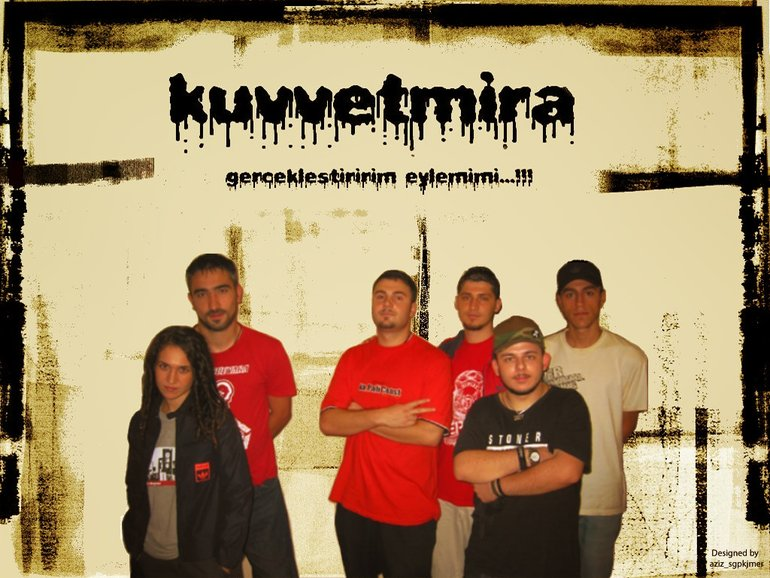

KuvvetMira(1998)
Kuvvetmira , Kuvvet Aynası (Kuvvet Mirror) anlamına gelen, Sagopa Kajmer 'in kurduğu eski bir rap oluşumu, günümüzde ise stüdyo ismidir. Kuvvetmira ilk kurulduğunda Dj Mic Check'in (Sagopa Kajmer) stüdyosunun adıydı. Daha sonra bir Rap Topluluğu halini aldı. Bu oluşuma birçok rap müzik sanatçısı katılmıştır. Kuvvetmira'nın amacı, bünyesinde rap müzik yapanları buluşturmak ve bir koalisyon ortamı oluşturmaktır. Kuvvetmira çoğu kez aynı tip oluşumlarla karşı karşıya kalmıştır.
